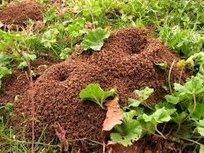

Habitat e Funções
As formigas podem ser encontradas em quase todos os habitats do mundo, exceto na Antártica.
As formigas também são insetos sociais que vivem em colônias, onde os indivíduos fazem as divisões das tarefas. Em uma colônia encontramos a rainha, as operárias e os machos.
Todos os indivíduos passam pela fase de ovo, larva, pupa e adulto. Entretanto, o que determina se a larva fêmea se tornará rainha ou operária é quantidade e qualidade do alimento que receberá nesta fase. As que serão rainhas recebem maior quantidade de alimento e de melhor qualidade.
Quanto às funções na colônia, as operárias são responsáveis pela construção, manutenção e limpeza do ninho, cuidado com a prole e defesa. Ao macho cabe apenas a função reprodutiva. Eles permanecem no ninho até o vôo nupcial, quando procuram uma fêmea reprodutiva. Após isso, eles morrem, mesmo que não tenham copulado.
